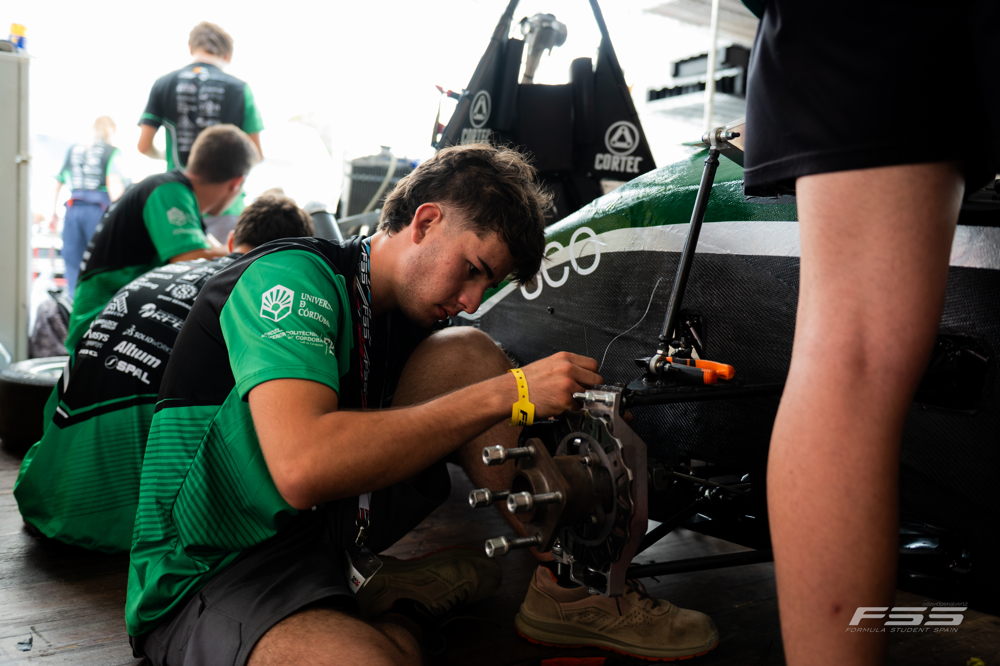
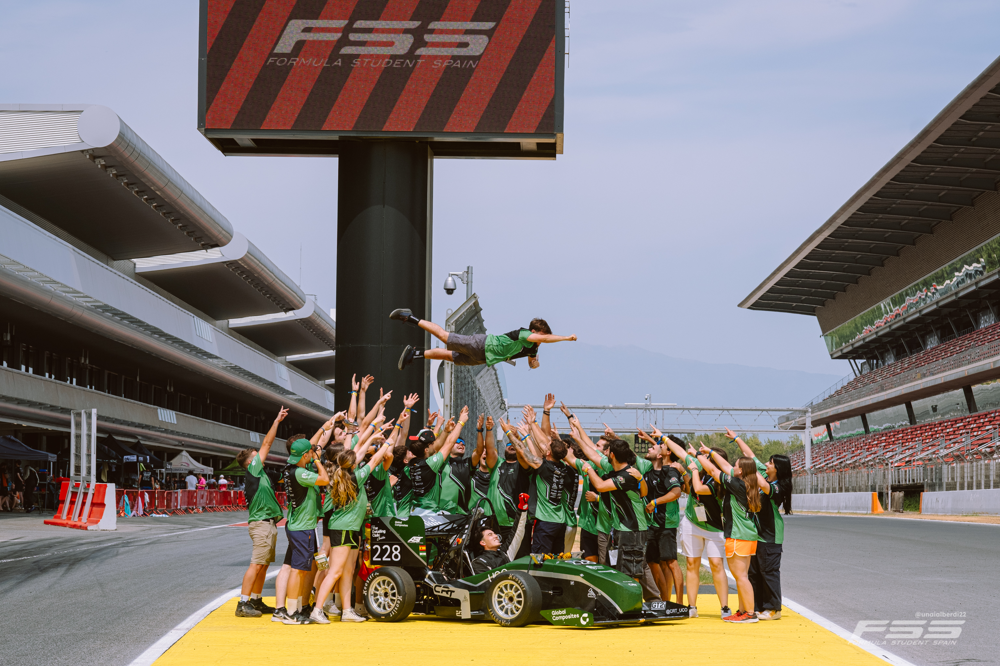

Córdoba Racing Team (CRT) es el equipo de competición de la Universidad de Córdoba dedicado al diseño, desarrollo y construcción de monoplazas para Formula Student, una de las competiciones universitarias de ingeniería y automoción más exigentes del mundo.
El proyecto nace con un objetivo claro: llevar la formación universitaria más allá de las aulas y convertir los conocimientos adquiridos durante la carrera en tecnología capaz de enfrentarse a un entorno real de competición.
Formula Student reúne cada año a equipos universitarios de todo el mundo. En ella, los estudiantes no se limitan a diseñar un vehículo y ponerlo en pista. Cada equipo debe afrontar prácticamente todas las fases que encontraría un proyecto profesional de ingeniería: desde la concepción y diseño del monoplaza hasta su fabricación, puesta a punto y validación, pasando por la gestión económica, el análisis de costes, la innovación, la planificación del proyecto y la viabilidad empresarial.
"El resultado es un entorno de alto rendimiento en el que ingeniería, competición y gestión trabajan conjuntamente."
Mucho más que un coche
Uno de los elementos que hace especialmente diferente a Formula Student es que la competición no se decide únicamente por quién consigue el vehículo más rápido. Los monoplazas son sometidos a diferentes pruebas dinámicas en pista, pero los equipos también deben defender su proyecto ante jueces especializados y demostrar la calidad de sus decisiones técnicas y empresariales.

Trabajo sobre el prototipo

Foto de equipo en FSS 2026
Diseño, eficiencia, innovación, costes, estrategia y viabilidad forman parte de una misma competición. De esta manera, los estudiantes tienen que aprender a tomar decisiones similares a las que encontrarán posteriormente en la industria: qué desarrollar, cuánto cuesta, cómo fabricarlo, qué recursos necesita y, sobre todo, por qué esa solución es la adecuada.
Es precisamente esta combinación la que convierte a Formula Student en una experiencia formativa especialmente cercana al mundo profesional. El estudiante deja de trabajar únicamente sobre problemas teóricos y pasa a enfrentarse a plazos, presupuestos, proveedores, fabricación, pruebas, errores y decisiones reales.
Un proyecto multidisciplinar
Córdoba Racing Team está formado por estudiantes de distintas ramas de conocimiento de la Universidad de Córdoba, que trabajan de manera conjunta en un proyecto común. Aunque el automóvil constituye el elemento visible del equipo, detrás de cada monoplaza existe un trabajo mucho más amplio. Ingeniería, electrónica, programación, fabricación, diseño, comunicación, gestión, organización y desarrollo empresarial convergen dentro de un mismo proyecto.
El objetivo no es solamente construir un coche. Es aprender a construir un proyecto.
Del aula a la pista
El trabajo del equipo combina formación académica con experiencia práctica. Los estudiantes participan directamente en el desarrollo del vehículo, desde las primeras fases de conceptualización hasta las pruebas y validaciones necesarias para llevarlo a competición.
Cada decisión tiene consecuencias. Un cambio en el diseño puede afectar al peso; una elección de materiales puede modificar los costes; una solución electrónica puede condicionar el comportamiento del vehículo; y una modificación aparentemente pequeña puede terminar afectando al conjunto del monoplaza. Ese proceso obliga a los integrantes de CRT a trabajar bajo una filosofía muy cercana a la industria del motorsport: diseñar, fabricar, probar, analizar y volver a diseñar.
Representar a Córdoba
Más allá del componente deportivo, Córdoba Racing Team pretende convertirse en una plataforma para fomentar el talento universitario, impulsar la innovación y acercar a los estudiantes a la industria tecnológica y del automóvil.
La participación en Formula Student permite además situar a la Universidad de Córdoba dentro de un entorno internacional en el que equipos universitarios de diferentes países comparten conocimientos y compiten.
Porque, al final, Córdoba Racing Team no construye únicamente monoplazas. Construye experiencia, conocimiento y talento preparado para competir en el mundo real.